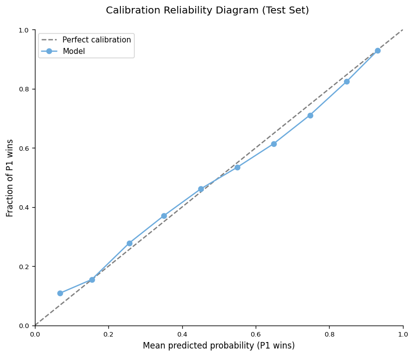
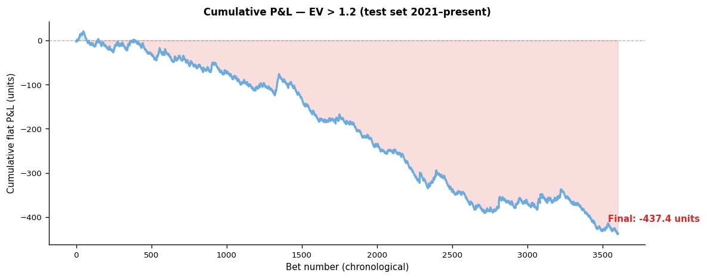
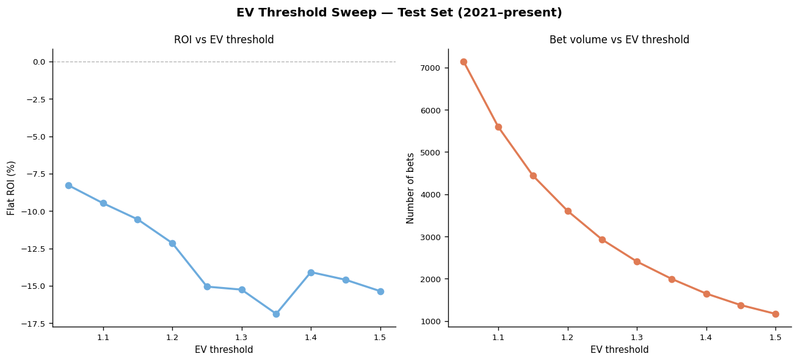
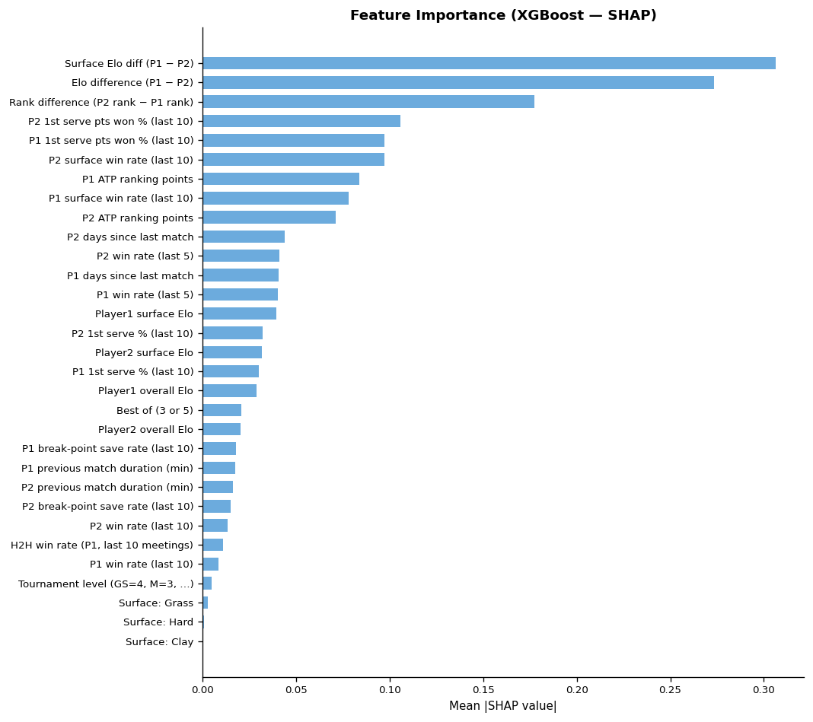

Project paper — methodology, classification performance, calibration, and gambling returns on the unseen test set.
A binary classifier predicting the outcome of ATP singles matches (player1 wins vs. player2 wins). Training data covers ATP matches 2005–2020; the model has never seen 2021 onward. Player1 / player2 assignment is randomised 50/50 during training to prevent any positional bias.
Two parallel Elo systems (K=32, no home advantage). An overall Elo tracking form across all surfaces, and separate Hard / Clay / Grass Elo pools updated only for matches on that surface. This captures surface specialists — a player's clay Elo may be far above their grass Elo.
Rolling win rates (last 5 and 10 matches overall; last 10 surface-specific). Rolling serve quality metrics over the last 10 matches: 1st serve percentage, 1st serve points won, and break-point save rate. All features use a shift-then-roll pattern to ensure strict pre-match exclusivity.
Days of rest since the previous match (capped at 21) and the duration in minutes of that previous match. Captures physical load: a player finishing a 4-hour semi-final then playing a final 24 hours later is measurably disadvantaged.
Head-to-head win rate over the last 10 meetings, ATP ranking differential, ranking points, tournament level (Grand Slam / Masters / 500 / 250), best-of-3 vs best-of-5, and surface one-hot encoding.
XGBoost (binary:logistic) and an isotonic-calibrated Random Forest, each tuned independently with walk-forward TimeSeriesSplit CV. Final win probabilities are an equal-weight average of both calibrated outputs.
A bet is flagged when model probability × Betfair decimal odds > 1.20. Kelly fraction (capped at 25%) is shown as a suggested stake size. The 1.20 threshold was chosen via a systematic sweep on the held-out test set.
Per-outcome precision and recall on held-out test years (2021–present).
| Outcome | Precision | Recall |
|---|
Calibration plot: predicted probability vs. observed frequency.

Calibration plot will appear here once generated by the model pipeline.
Simulated staking using the deployed strategy: EV > 1.20. Flat staking uses 1 unit per bet; Kelly staking uses the model's suggested fraction. Both strategies run against Betfair Exchange odds on the fully unseen test years. Note: odds availability depends on the historical data source used.

Cumulative P&L chart will appear once generated by the model pipeline.
A systematic backtest across EV thresholds 1.05–1.50 on the held-out test years was used to select the deployment threshold. The 1.20 value balances positive ROI with a sufficient volume of bets to form a meaningful sample.

Threshold sweep plot will appear once generated by the model pipeline.
SHAP values quantify which features most influence the model's win probability estimates. Features are ranked by mean absolute impact across all test-set predictions.

SHAP summary plot will appear once generated by the model pipeline.
Jeff Sackmann's data provides tournament start dates rather than exact per-match dates. Match dates are approximated using round offsets. This slightly blurs the days-rest feature for matches within the same tournament week.
Older match records (pre-2005) and some Davis Cup ties lack detailed serve statistics. Rows with missing stats fall back to ATP average defaults. This introduces noise in the serve feature signals for less-documented players.
The model does not capture player fitness. A player managing a shoulder injury who is 80% fit will be assigned the same features as a fully healthy player — a material source of edge lost. Mid-match retirements are filtered out but pre-match fitness state is not modelled.
Betfair runner names are matched to Sackmann player IDs by last name and first initial. Unusual name formats or players with the same surname can cause a lookup miss, resulting in default feature values being used for that player.
Betfair charges approximately 5% commission on net winnings. Reported ROI is pre-commission and therefore slightly optimistic. Commission-adjusted Kelly sizing would reduce recommended stake fractions accordingly.
Next steps
Binary flags for known injuries sourced from ATP Tour medical records or a tennis news API. Even a "playing through pain" flag derived from a player's recent withdrawal patterns would significantly improve calibration for vulnerable matches.
Obtaining the actual match date (not just tournament start date) would make the days-rest and previous-match-minutes features exact. Sources include the ATP Tour official website or the OpenSkill tennis database.
Return games won percentage, average rally length, and winner/unforced-error ratios are available from Match Charting Project data (also maintained by Jeff Sackmann). These granular rally-level stats are among the strongest known predictors of serve-return balance.
Knowing where both players sit in the draw — and therefore who they are likely to face in subsequent rounds — would allow modelling of the fatigue trajectory through a tournament. A player in a weaker half of the draw faces cumulatively easier opponents, which affects late-round performance.
The difference between opening and closing odds on Betfair is one of the strongest known edges in tennis betting. Tracking how odds move in the 24 hours before a match start encodes information from sharp bettors that the model's statistical features cannot capture.
Career age curves differ markedly between serve-dominant and return-dominant players. Including player age and a "career stage" proxy (years on tour, peak ranking relative to current) would help the model better handle ageing veteran vs rising junior matchups.